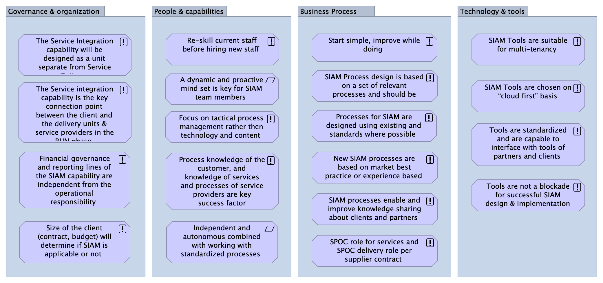

Guiding Design Principles
(
)

The guiding principles serve as input for scenario generation in the design of the SIAM Operating Model
Governance & organization
The Service Integration capability will be designed as a unit separate from Service Delivery
The Service integration capability is the key connection point between the client and the delivery units & service providers in the RUN phase
Financial governance and reporting lines of the SIAM capability are independent from the operational responsibility
Size of the client (contract, budget) will determine if SIAM is applicable or not
People & capabilities
Re-skill current staff before hiring new staff
Focus on tactical process management rather then technology and content
Process knowledge of the customer, and knowledge of services and processes of service providers are key success factor
Independent and autonomous combined with working with standardized processes
A dynamic and proactive mind set is key for SIAM team members
Business Process
Start simple, improve while doing
SIAM Process design is based on a set of relevant processes and should be lean
Processes for SIAM are designed using existing and standards where possible
New SIAM processes are based on market best practice or experience based
SIAM processes enable and improve knowledge sharing about clients and partners
SPOC role for services and SPOC delivery role per supplier contract
Technology & tools
SIAM Tools are suitable for multi-tenancy
SIAM Tools are chosen on “cloud first” basis
Tools are standardized and are capable to interface with tools of partners and clients
Tools are not a blockade for successful SIAM design & implementation